|


 |
|
|
Última edição em
27/fev/2008
Edição atual: 17 março
2008 |
Nesta seção você fica sabendo a quantas andam os canteiros de obras da
Fergel, suas etapas e alguma informações técnicas.
|
Limpeza da Lagoa e estruturas de civil no Japiím
Enquanto o sol não chega pra valer, as
obras no futuro Parque Lagoa do Japiím continuam avançando.
Enquanto
uma equipe da Fergel trabalha na limpeza do meio aquático e entornos,
outras equipes trabalham no erguimentos das edificações civis que
fazem parte do projeto arquitetônico.
Embora as
chuvas ainda estejam intensas e imprevisíveis, os trabalhos
continuam.
Veja o projeto...
|
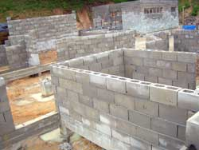

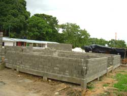 |
|
|
|
Vigamento na UFAM
As obras na
Universidade Federal do Amazonas estão na fase de concretagem de
vigas. Os trabalhos externos dependentes do uso de argamassa tem sido
comprometidos por força das chuvas que ainda estão muito intensas na
região. Enquanto isso, os serviços de carpintaria e linhas de produção
de montagem de aço se adiantam para a chegada do verão. |
|
|
|
|
Edição 27 fevereiro 2008 |
|
|
|
|
|
|
Fergel entrega
galpão industrial na Yamaha
Neste mês
de fevereiro, a Fergel entregou a estrutura metálica de um galpão
industrial na fábrica da Yamaha no Pólo Industrial de Manaus. A
empresa produziu e montou toda a estruturas de aço e devidos
acabamentos. Na platibanda da fachada e na cobertura foram utilizadas
telhas de alumínio envernizadas em ambas as faces, sendo que sob esta
cobertura foi aplicado um revestimento para isolamento térmico com “rock-felt”,
que é um tipo de feltro leve e flexível de lã de rocha com reforços de
fios de fibra de vidro e poliéster.
|
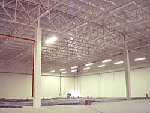
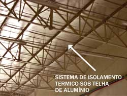
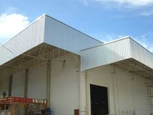 |
|
Quadra poliesportiva em
Boa Vista
A ação da
Fergel extrapola as fronteiras do Estado do Amazonas. A empresa está
entregando em março, um ginásio poli-esportivo que é parte da Vila
Olímpica da Prefeitura de Boa Vista. Uma das características mais
interessantes da obra é o vão livre central com oitenta e seis metros
de distância e altura de vinte e sete metros. A estrutura metálica foi
desenhada com 24 tesouras de 36 metros cada uma e centralizada num
globo de 8 metros. O formato redondo do ginásio e a própria
sustentabilidade, constituiu-se na maior dificuldade para a montagem
das estruturas. Outra característica importante é que a Fergel montou
uma operação logística para enviar o material e a infra-estrutura de
fabricação, deslocamento e montagem para a cidade de Boa Vista, onde
fabricou todas as estruturas.
|
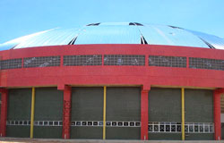
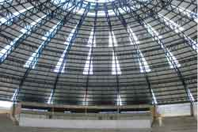
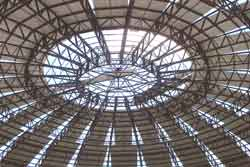
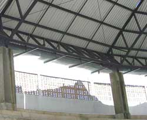 |
|
Fergel instala estrutura metálica do antigo aeroporto Ponta Pelada
A Fergel
produziu e está finalizando a montagem de toda a estrutura metálica do
antigo aeroporto Ponta Pelada, hoje, aeroporto da aeronáutica do 7º
COMAR. A cobertura foi executada num sistema misto, onde foram
aplicadas “telhas galvalume” e telhas termoacústicas de alumínio do
tipo sanduiche com uso de poliuretano para o isolamento térmico
acústico. As termoacusticas cobrirão especialmente as áreas onde
haverá circulação de pessoas.
|
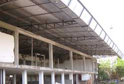
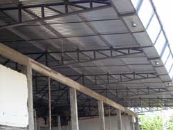
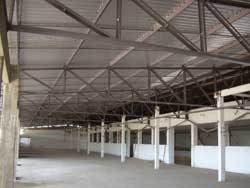
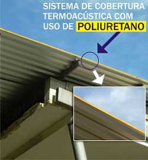 |
|
Fergel presente
também no viaduto do Coroado
Após a entrega do
guarda-corpo de aço de todo o complexo do viaduto da Rua Recife, a
Fergel fabricou e instalou na última semana de fevereiro, o
guarda-corpo de aço em uma parte da estrutura do complexo de viaduto
que está sendo construído no Bairro do Coroado. A estrutura está
localizada em uma das marginais de acesso ao bairro que tem um
desnível de quase cinco metros em relação à pista principal. O
guarda-corpo cobre uma extensão de 100 metros e foi solicitado pela
empresa construtora da obra. |
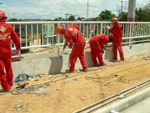
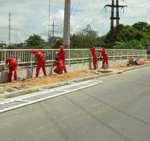 |
|
Edição 11 fevereiro 2008 |
|
Prédios de Estatística e Matemática na
Universidade do Amazonas
Após um intenso período de chuvas que retardaram o ínicio da
concretagem das fundações dos prédios das Faculdades de Matemática e
Estatística, que estão sendo construídos no Campus da UFAM, o
canteiro de obras está a mil. Nesta semana (11-15/fev) serão
finalizados os serviços de concretagem dos pilares de sustentação. As
vigas dos vãos de mais de 10 metros já estão praticamente finalizadas
e na semana seguinte já deverão estar amarradas nos pilotis para o
concreto e posterior malheamento do pano da laje.
|
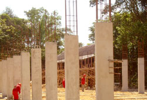
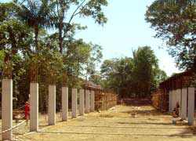
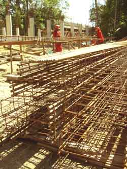
Nas fotos acima, os "pilotis" concretados
a última sequência destes em finalização de carpintaria para a concretagem. Na última
foto, a preparação das ferragens das vigas. |
|
Parque Municipal Lagoa do Japíim
Finalizados os serviços prioritários de limpeza da área
do Parque Municipal Lagoa do Japiím, a Fergel iniciou rapidamente os
serviços de fundações do primeiro bloco do complexo da Lagoa do Japiím.
Em uma etapa concomitante serão iniciados os trabalhos de drenagem e
despoluição da lagoa. |
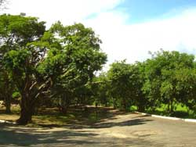
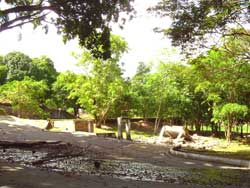
Os registros acima foram realizados no
segundo semestre de janeiro
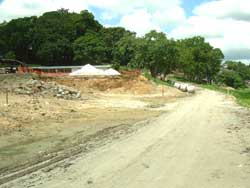

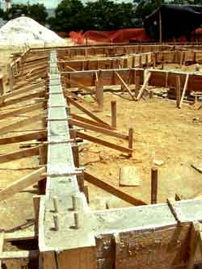
As 3 imagens acima foram registradas em 9 de fevereiro último.
|
| |
|
|
Atlhetic
da Amazônia A Fergel
está finalizando a instalação das estruturas metálicas da nova área de
produção da empresa Atlhetic. Os sistemas instalados de vigamentos
metálicos e sustentação das coberturas causam a admiração de todos que
passam em frente a obra. |
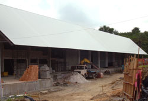
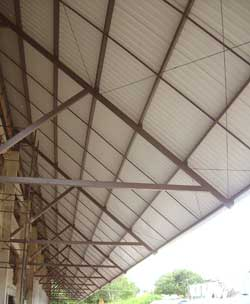
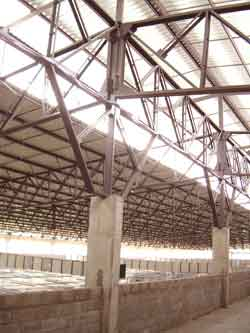
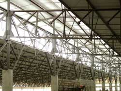
As fotos acima apresentam uma sequência do sistema de estruturas de
cobertura e platibanda do galpão da Athletic. |
| |
|
|
Yamaha
A Fergel
também está finalizando a construção de um galpão e as estruturas
metálicas na empresa Yamaha.
|
| |
|
|
Sambódromo
Fergel
finalizou a substituição das partes metálicas corroídas e consumidas
pelo tempo nas escadarias e nas duas caixas d´água no sambódromo em
tempo do manauense poder assistir os desfiles das escolas de samba com
segurança.
Passado o
momento da festa, a FERGEL vai voltar para à avenida do samba para a
conclusão de uns poucos acabamentos que são necessários à reforma.
|
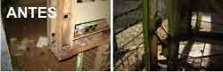
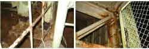
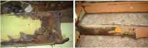
Situação das escadarias do
sambódromo antes do carnaval.
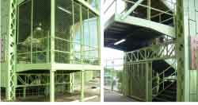
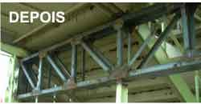
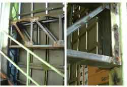
Após a reforma. |
|
A FERGEL É
FORNECEDORA CADASTRADA DO BNDES.
Sua
empresa pode financiar qualquer produto Fergel no BNDES.


• Porque Estruturas
Metálicas ? (avaliação comparativa entre o concreto e o aço)
• Como surgiu o aço depois
do ferro
• Para que serve o aço
• Dicionário da Construção
• Tabela de peso e medidas de aço pré-moldado

• Reciclagem
• O uso do aço para a natureza
• Legislação Ambiental |